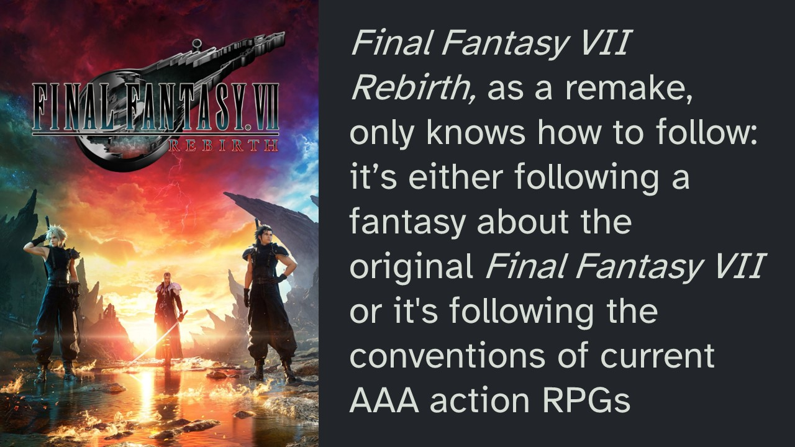

In twenty-seven years, when the project of remaking Final Fantasy VII (in its current form) is as old as the original Final Fantasy VII is today, will this multi-video-game-console-generation-spanning-remake be getting a remake? Will Square Enix, or whoever owns them in 2051, remake the remake? Will the kids of today remember playing the latest installment, called Final Fantasy VII Rebirth, and have nostalgia for what now functions as an elaborate pandering to our nostalgia? I don’t want to try and predict what a particular video game might become to certain generations of gamers, but I will say that however Final Fantasy VII Rebirth is remembered, whatever its contributions to the medium, this game has not 'remade' the original's impact. This isn’t a criticism either, because it certainly isn’t trying to; the performance of the game is aware of its non-equivalence with its source material to such a painful extent that this realisation has seeped and grown within the divergent retelling of the original story itself.
This essay will contain major spoilers for the original 1997 video game, Final Fantasy VII, and the 2020 remake. I've tried to avoid spoiling the latest instalment, released this year, called Final Fantasy VII Rebirth. But there will be some minor spoilers in the forms of the visuals I show and what's necessary for the concepts I'll be discussing. Where possible, I use examples from the original Final Fantasy VII to make my points. If you've never played that game, I recommend it. But if you don't plan on playing it, this essay may prepare you with the context necessary to appreciate Rebirth and even video games more generally, albeit with a disappointment in the state of the gaming industry. I hope you'll soon see what I mean.
Final Fantasy VII Remake was released in 2020 and initially posed as a faithful retelling of the first act of the original, a straight 'remake'. However, the introduction of a new plot device revealed Remake to not be the remake we were expecting:
Whispers. Perhaps best described as arbiters of fate. They are drawn to those who attempt to alter destiny’s course and ensure they do not.
Let’s say these whispers are a diegetic analogue of the loyalist fans demanding an accurate retelling, against the creative impulses of the developers and their desire to tell a new story. Cloud and his companion’s struggle against the whispers at each instance of the story’s divergence from the original, is a reflection of the developer’s struggles to fulfill fan’s expectations. At Remake's conclusion, it remained to be seen which force would win out in this struggle between nostalgia and new visions; though the finale seemed to suggest a breaking away from destiny and the opening up of more possibilities in its sequel, Rebirth. Now having experienced the remake's continuation, it's clear those expectations failed to appreciate the depth of the Final Fantasy VII remake project’s existential crisis.
The high cost of production and the success of the original Final Fantasy VII made it a risky proposition for Square Enix to deviate significantly from the established narrative, as it could alienate the dedicated fanbase. In both Final Fantasy VII Remake and its sequel, Rebirth, risky creative liberties were taken but Rebirth didn’t cash in on the potential for innovation it inherited from the game before it. This is a controversial thing to say in the context of Rebirth’s universal acclaim. However, I don’t see this as a criticism of the game itself, but as a symptom of the discourse around video games as commodities, and the narrow space made available to developers for the exploration of new concepts within that space.
This is not a review of Final Fantasy VII Rebirth to tell you whether or not you should buy or play the game. This is a review of Final Fantasy VII Rebirth for video games. It sets out to discover, against Rebirth, new ways of thinking about video games as a whole, to open up their possibilities. So here we are putting this remake to task for its identity as a video game, to see what it has contributed to the medium generally as a human practice. What does this game do for the possibilities and potentialities of interactive media? We will see how Rebirth is constrained by a definition of video games being imposed upon it, which regards video games as consumer products, over and in a way that hinders their status as lived inter-human events.
Rebirth is another performance of that deep tension, not at all unique to video games, between the power of familiar old stories, including their safeness and appeal as consumer products, their ability to generate money, against the demands of the Real for something new. This problem is not unique, but video games constitute a special case because their economic value is not only drawn from their contributions to creative cultural discourse in the way literature, fine art and (often) cinema are. Video games are also appraised through the lens of technics. Whatever a video game’s art status, it is also a technological demonstration, a manifestation of what is currently possible with the computer hardware available during development. The cutting-edge advancements always hold appeal, and are the engine driving much of game development, especially from industry leaders – indie games will be a reoccurring exception here. Hence the appeal of remakes.
Film studios have sequels and adaptations for their safe financial bets, none of which are necessarily creatively bankrupt because the art is still remade in each instance, and it only must lean on a familiar intellectual property to help it gain mass appeal. Risk-averse game studios have an apparently even safer option in addition to the above: because of the imprint of the current technological limitations present in each video game, and the way that technology affects how the game is experienced so fundamentally, and the way we appraise them is so closely married to a technological progressivism, game publishers are turning increasingly to remakes in which the creative human event of the video game image is superseded by modern graphics and quality of life improvements. As the medium of video games matures, the number of classic video games with a fidelity disproportionate to the capabilities of modern hardware increases. If Ocarina of Time or Chrono Trigger or Metal Gear Solid are such masterpieces, if they really stand as some of the best experiences video games have to offer, they stand as an implicit critique of the necessity of advancements in computing, which is one of the pillars of video game marketing. The industry’s answer, then, is remakes.
Remasters and rereleases or ports are an appeasement to the cultural legacy we place on these titles. They are rarely given the necessary resources or effort for a faithful conversion. The fact that voluntary fan-driven emulation or decompilation projects are often the best way to experience these games speaks to this. Game publishers’ real response to the continuing cultural impact of their intellectual properties is increasingly often a remake because it entails less risk than a sequel or an entirely new project from an industry auteur, while still being graphically impressive. Remakes also entail less risk for the customer too because of their familiarity or reputation. And the line separating remake and remaster can be a blurry one but here I’m going to say that a “remake” is when a classic game is created anew to take advantage of current hardware. But this is a definition I will only maintain for the present discussion.
The way we think and talk about video games is making space for the development of all these remakes. And I’m not interested in performing a genealogy or a history of this style of thought to situate it in a broader techno-late-capitalist milieu. This would be a productive exercise according to the intellectual discourse of the academy, positioning the video game within a socio-cultural and historical context. But it would not be a productive exercise according to the video game. The reason for this is that the video game entails a different style of thought and has a different order of operations. By this, I mean that video games are experienced as immanent events, which then determine how an image is resolved. Video games think according to the next action or event; this is how we play video games. For all the importance we place on video game images, play proceeds each image. To think about video games within a certain cultural context is to generate a conceptual image that holds and determines the video game. It sets up a space in which the video game can move, according to the model we have given it. The video game has not yet been given room to determine itself and the adjacent discourse has not yet been made to answer to the experience of gaming. Most conversation about video games only knows how to regard them as images, not even always interactive images, but the essence of the video game is the emancipation of the image through its metamorphosis into an event. This brief description is not a formal argument for why and how video games ought to be thought of differently. I only touch on it here to say that our definition and understanding of these inter-human events can limit what we do with them. And surely the prevalence of remakes might be taken as a symptom, that our current default model for thinking about video games is constrained. But rather than philosophically unpacking that, to liberate the video game from above, which risks only then placing it inside a new container, I'm more interested in finding a way to let the video game think for itself. Or better, to think the discourse according to video games, especially as we find it evinced in remakes like Rebirth.
Final Fantasy VII has spawned what is probably the most elaborate, extensive and ambitious remake project in the history of gaming. The concept and scope of it are the ultimate expressions of the gaming industry’s current prioritizations, which is to capitalize on past successes while demonstrating the latest technologies (Nintendo is an exception and only does the former). And despite this remake project's willingness to add additional plot and gameplay elements, as previously mentioned, the conservative formula is still being applied here; give us what we know, in a way that is bigger and better than we remember. How else are they to deploy these relentless advancements in computing? They revisit the past in a cyclical fashion to make it now new again. The technology that makes video games possible, for the sake of its continuing progress and existence, gives this medium a strange insecurity about its history. The object of much of the industry's strivings, namely graphical realism, only makes the past look uglier, and it must be remade. So, Square Enix takes the ugliest critically and commercially successful game in their catalog – not just ugly through a comparison to modern graphics, but philosophically ugly for its success despite the janky hodgepodge graphics that were always a bit off because they happened in the transition to new 3D technologies – Square Enix takes this contradiction, this game whose existence is itself a critique of many of the industry's current priorities, and they remake it as hard as they can, to decimate the implicit argument against fancy graphics that is Final Fantasy VII's existence.
And I acknowledge the desire often evident in video game remake projects to enhance and not dismiss the artistry and intentionality of the original work, even within the limitations of its original hardware. But these intentions are couched in the context of a question, which is whether to prioritize old instances of the video game’s happening or to enable – make more comfortable and accessible – new instances. But the video game is never treated here as an event that is always remade each time you play it and is instead thought of as an object we need to do something to, an object we think about and make decisions for, and sell and purchase and remake or henceforth replace. But video games, in the playing and developing of them (which are not distinct processes), are their own events, their own kind of decisions and their own kind of thought. Video games think already, before we think about them, in a way that is fundamental to their nature, and resistant to the logic of remakes, which seeks to frame them as objects, hold them still, stop them from thinking. This resistance is manifest in the remaking of Final Fantasy VII.
How could such a maximalist expression of video games, not expose what it is as a video game? For how long can a video game happen before it tries to think in the ways only video games can? You can only confine video games to the familiar grounds of nostalgia and fan service for so long before the process of development, or even in anticipation of so much development and the reality of that dearth of thought or creativity, causes a rupture. Rebirth’s departures from its source material feel restrained and confused enough to be an involuntary burst, or a concession to appease this primal aspect of the video game proper, which cannot survive on the diet of shareholders. And this is even more fitting because fighting against corporate greed is a central theme of the original Final Fantasy VII, so of course the remake project couldn’t help but be this strange critique of itself.
Rebirth is a signal to start thinking and talking about video games differently. This is true of every video game; there has always been this frustrating insufficiency in language that tries to translate the experience of a video game into itself. This is because video games entail a human experience that cannot be reduced to language, but we feel like it ought to be. No one really expects this of music, and I don’t mean music that is listened to but music that is played. Even though every video game is played before it is seen, we only know how to think about video games according to the modes of other mediums – and this can be true of video games themselves, especially remakes, so that they constitute a confused event, lacking commitment to the novelty or essence of the medium. We bracket the different art forms within the experience in which our language can find purchase. The story is treated separately from the music which is separate from the visuals. Even gameplay is regarded as a tool, for the user, to make them have fun. There is very little space in the public discourse around video games for the video games themselves, as dialogic inter-human image events, to be discovered. Not that it needs to be discovered, we already have it, we play and value video games in a way that is not wholly dependent on the discourse surrounding them. However, games like Rebirth exist because of that discourse; Rebirth represents video games’ captivity within the prism of language which overdetermines and underestimates them.
Final Fantasy VII Rebirth is a video game that does not know what it is. It obviously still, like Remake before it, can’t decide whether to be a sequel of Final Fantasy VII or a remake and so is attempting to straddle both. But more importantly, like all remakes, it doesn’t know what it is as a video game. It’s so full of images of video games, there are open worlds, romance options, mini-games, crafting, skill trees, outfits, vehicles, puzzles, climbing, collectibles, side quests, multiple playable characters, faithful reimaginings of its source material and interesting departures from it, all of it in this single, deep and wide, maximalist expression of today’s AAA gaming landscape. But is it actually thinking along those lines with us, is it picking any of them up, or is it merely showing us a great many things we already like? The gold saucer isn't the only amusement park in Final Fantasy VII Rebirth; this entire game is an amusement park. Each town is full of tourists having fun and Cloud and his friends feel like costumed characters. The experience is interactive, but interactivity alone doesn’t evince thought, at least not with originality, not like what I will identify in the original Final Fantasy VII. Though many of the same staff from the original Final Fantasy VII are working on the remake project, my complaint here is not for lack of ambition but for a lack of video game concepts which are Rebirth’s own, not borrowed from other mediums, other games or past instances.
Final Fantasy VII was released in 1997 and we still haven’t come to terms with it, with what makes the experience of this video game so affecting. This is not for lack of analyses but for how these analyses get in the way of the game itself, to form a kind of resistance. For example, we might analyze the game this way:
Cloud's character arc is a penetrating critique of the hyper-masculine power fantasy, particularly prevalent in video games in the nineties. We perform him as the main playable character and experience his tuff-guy attitude and giant phallic sword in a way that is later undercut by the revelation that Cloud is delusional. He has confused his identity with someone else through the trauma of the authoritarian structures he aspired to be a part of. This facade also shields him from past failings to be that traditional hero and save the people he loves from injury or death. The game gives us this power fantasy, only to take it away to reveal the truth of its vulnerable state, that he is only a puppet. Tifa saves Cloud by helping him rediscover his true self, his true strength, and Cloud is able to assume a healthier form of masculinity in which feelings are expressed and accepted. This allows Cloud to rediscover his past, and that he was able to keep his promise and and be there for Tifa despite and not because of his strivings for status within an oppressive authoritarian system.
This is just one of many possible readings of Final Fantasy VII. But any reading will treat the game as a static text, so all need to be flagged as forms of resistance to the video game itself. Everything I just attempted to convey through language to stand for the video game has already been shown by Final Fantasy VII itself, in a way that is incommensurable with my representation of it. It's true that video games entail representations too, they are images, but they are unresolved, incomplete images still happening. When the video game is regarded in this way, what I call an 'image-event', it is its own explanation of itself. Readings of video games like the one above are still welcome, but they are instances of a thought foreign to the video game; they do not circumscribe or determine their objects. Rather, these analyses come out of and are determined by video games. A true response to the thought unique to Final Fantasy VII can only be another video game. And it's a thought we can feel Rebirth grasping towards, with how it departs from the original, but the imperative of the remake project is getting in the way so that the thought cannot even discover itself. There is so little room for a video game to exist in the project of a remake.
Perhaps the greatest form of resistance to Final Fantasy VII is the longing for it to be remade. It's true that video games don't come out of nowhere, and that the above description of Cloud's masculinity might change the way you experience Final Fantasy VII next time you play it. And, of course, the development of games is influenced by the discourse surrounding them too. But this is not how video games think, it's not how you think while you're playing a video game. Video games are pure, ahistorical, action images. When we try to reposition them into other forms of public discourse, the interactivity and spontaneity of the image-event, what sets video games apart from other mediums, the video game itself, always gets left behind. Again, there is nothing wrong with making these kinds of transfers, but they ought not to feed deterministically back into video game development because they are almost always mistaken about what a video game is. Remakes are the epitome of this circular force that is hindering creativity in the gaming industry. The thing about remakes is, they are video games, but they are also interpretations of their source material, types of resistance to the video game proper.
Why are gamers so defensive about the art status of video games? Just because we can think about video games in the same way we think about art, this does not mean they themselves are art. The definition of art can be very broad and it's easy to include video games in that, especially when we think about performance art. But usually, the video game's art status is argued for in defense of the medium's cultural value. People want video games to be taken as seriously as other older forms of entertainment like film and literature. Though it might sometimes be a useful exercise to think about video games in that mode, it also occludes what is most interesting about them and encourages us to think about video games as if they were merely cinema plus interactivity. But that interactivity changes the lived experience qualitatively from top to bottom so that anyone imposing a cinematographic reading onto a video game has lost their intended object from the start. It's better to follow Hideo Kojima here, to say video games are not art but they do contain art. They are able to generate art, even in the playing of them, in such dynamic, unrestrained and interesting ways because they themselves are not art. Video games entail a thought strange enough to those old modes, they require enough of a radical shift, that it's better to lob that whole issue off at the head, to make room for a different form of discourse to immerge, which throws art instances into worlds experienced as images. Then art can become mobilized and deployed at the whim of developers or players within the video game image. This kind of play is impossible for a remake like Rebirth because it's too busy performing a static rendition of Final Fantasy VII as if that game were a piece of art one can simply make again to the same effect, this time with better technology.
The characters in Rebirth are expanded from the original with cutscenes and side quests and dialogue that explores their backgrounds. This is all fine, but it begs the question of how these characters became so familiar to us and how we got so invested in them in the first place. There is an economy to the original, a conciseness to each of the characters' stories that makes them especially poignant. And these lean narratives have been bloated in the remake project in the style of a TV series, where we experience characters over extended time to create a familiarity. But now the primary mode in which we experience them no longer belongs to the video game. The video game will accept any art we put into it, this is to say it can do it, sure, and it can even do it well. However, nothing about the original characters of Final Fantasy VII is getting 'remade' here, and it's important that we don't feign their equivalence or even enhancement in the way Rebirth wants us to. Most of the time spent with Cloud and his companions in the original was spent playing them, with the gameplay systems. That gameplay informed our impression of the characters first, and the story felt like an extension of those played identities. Even during story moments, the characters look like they need to look in order for us to be able to play them on the original PlayStation hardware. So, it feels like a story about these played identities. But Rebirth wants these high-fidelity assets, already established, to be able to be played; there is an image already in mind, that it wants us to be able to play with. In this sense, advancements in computer hardware have allowed the video game to submit itself to be more and more determined by the image. Now, the combat in Rebirth does have a lot of depth and each character does play uniquely, but the cinematographic and graphical presentation of those characters is so effective, it's so loud, that the gameplay feels like a concession in which we get to play as those characters that have already been established, not by the original Final Fantasy VII, but by the high-budget cutscenes and iconography already established by the remake project.
Fancy graphics and cutscenes can be very effective elements of a video game, but they ought to echo the impressions of the identities we experience in other parts of the game, rather than determining them. I say "ought to" because I find games that embrace their nature as video games more interesting and generous to the medium, and not to say games that fail in this regard are somehow invalid or inferior. They can be just as fun, but they are moving along different lines, old lines, those of other mediums. But again, realistic or high-fidelity visuals don't inherently mean these elements determine all others in the expression of that video game. For example, The Last of Us Part II's story and characters portray a cruelty and violence already present in the taxing and gruesome gameplay loop. We could say Ellie is a violent character because the game has required us to play her in a violent way; the story and portrayal of her character are a sort of response to that. So, we see different art forms being deployed in ways that support each other, but those elements unique to video games are leading in The Last of Us Part II. Final Fantasy VII Rebirth, as a remake, only knows how to follow: it's either following a fantasy about the original Final Fantasy VII or it's following the conventions of current AAA action RPGs. Now, this has created an interesting mixture at times, but it also leaves us with a game that is confused about its own identity. In this confusion and despite how entertaining it is, this game is a symptom of the industry's fear of the video game unrestrained, moving on its own terms.
And I should add that even the original Final Fantasy VII held this tension between the movement of the video game itself and the industry's aspirations. For example, there is a big difference between the cutscenes using the low poly character models and the prerendered movies. In 1997, the spectacle of the latter was no doubt impressive, but it also held a promise that one day we'd play a Final Fantasy in which the entire game looked like this. We're so far beyond that in 2024, that the old prerendered movies have a completely different effect. They no longer hold any promise of what's to come and instead reveal this video game's dissatisfaction, it's desperate reaching outside itself, to be more than what it is when played. One can't help but be slightly embarrassed for the game feeling like it needed to resort to such images; like they evince some shame or insecurity within the game itself.
But despite this, Final Fantasy VII still manages to do interesting things with gameplay in the telling of its story. Those reachings for an idealized realism don't prevent the video game from applying its essence to the material at hand. They don't prevent the video game from applying its essence to the art forms being deployed within the video game image, even prerendered movies. For example, in the lead-up to Aerith's death, we can't stop Cloud from approaching her, not because we are watching a movie but because the familiar inputs only register movements towards Aerith. When we push the button to interact with her, Cloud unexpectedly raises his sword. This is particularly effective for and supports the reading of Final Fantasy VII's story I presented earlier. Cloud is physically abusive to Aerith, in a way that ultimately, albeit indirectly, causes her death. If he had been able to approach her in a non-violent way, he might have been able to save her. And the game's interactivity pulls players into the experience of Cloud's violent personality as Cloud experiences it, as a confusion and lack of control. We play Cloud with a naivety that immerses us in the character's own obliviousness, in isolation from the reality of his past and true identity. Then the movie of Sephiroth murdering Aerith plays in a way that distances his actions from Cloud's because it happens in a different, non-interactive mode. The lack of interactivity in the cutscene aligns thematically with the experience of that game's other elements, namely its story, characters and themes. This blending of story and image through interactivity enhances how each element is experienced. In this way, Final Fantasy VII is committed to discovering its own possibilities as an image, as a story and as interactive media.
In contrast to this creative mixture of art forms, Rebirth seems much less interested in discovering what this medium can do to how we experience its story and images. While the original pushed boundaries, Rebirth remains fixated on the image it is tasked with remaking. This is to say it treats Final Fantasy VII as an image rather than a video game. To understand why this distinction matters, consider the essence of playing a video game: when you're engaged with a game, your primary concern is the next image that will unfold based on your actions. In that moment of play, you're not discussing or merely observing, but actively participating in the creation of the next visual state. You have a role to play in how that next image emerges and can influence, within the parameters of the software, what it turns out to be. We can apply this same logic in broader strokes, to the image that is Final Fantasy VII Rebirth: this is not an image-event in the way I just described because it has already been determined. This video game is capitalizing on an old thought, one already achieved and still being thought in the original Final Fantasy VII. In doing so, it hinders any new ideas it might be trying to have. Despite the convoluted changes and additions to the story, most of this game is a tech demo expanded to a preposterous scale. It's a tech demo in the sense that every remake is a tech demo, were it not for new technologies these remakes would have little to contribute. Even in its additional plot elements and gameplay mechanics like skill trees and crafting, these are all to show or demonstrate something, they are not from the source of an impulse to act within the image itself. I can't say there is no creativity present, but the origin of every remake is insecurity about the past for a technological progressivism. Final Fantasy VII's remake project doesn't let the video game think because it's too busy pushing it into a predetermined shape.